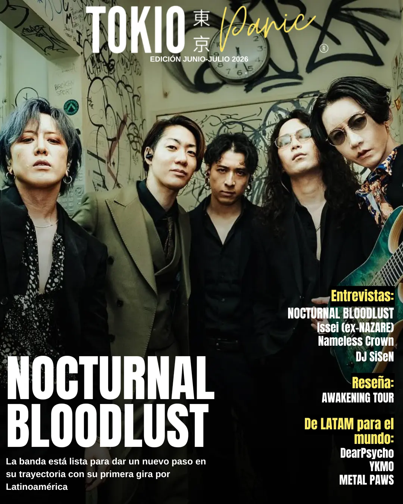

REVISTA TOKIO PANIC
Una recopilación de las entrevistas más profundas realizadas por TOKIO PANIC,
el análisis de la escena y las voces que mueven el visual kei.
EDICIÓN JUNIO - JULIO 2026

DescargarNOCTURNAL BLOODLUST
La banda está lista para dar un nuevo paso en su trayectoria con su primera gira por Latinoamérica, que incluirá un esperado debut en México este 16 de septiembre.
Leer entrevista →Issei (ex-NAZARE)
Tras dejar una huella imborrable con NAZARE, Issei continúa construyendo un nuevo camino como baterista, explorando diferentes proyectos y redefiniendo su propia identidad musical.
Leer entrevista →Nameless Crown
Formada en Indonesia en 2024, la agrupación ha construido una propuesta que fusiona la agresividad del metalcore, deathcore y metal sinfónico con la teatralidad y estética características del Visual Kei, dando vida a lo que ellos denominan Loud Kei.
Leer entrevista →SiSeN
El DJ japonés vuelve a mirar hacia el extranjero con nuevos proyectos, colaboraciones y una renovada energía que lo mantiene como un referente de la escena.
Leer entrevista →Reseña: AWAKENING TOUR MÉXICO
Viajamos a CDMX para el encuentro de tres grandes del visual kei: Kouki, Seth y Tsuzuku. Te contamos todo lo que vivimos en este emocionante evento.
DearPsycho
Inspiradas por bandas como An Cafe, SuG y Aicle, DearPsycho ha comenzado a construir una identidad propia que combina música, estética y una experiencia de concierto inspirada en la cultura Bangya japonesa.
Leer entrevista →METAL PAWS
Combinando la potencia del metal con una estética colorida, positiva y llena de energía, la agrupación ha logrado abrirse paso en una escena donde este género aún sigue siendo una rareza.
Leer entrevista →YKMO
YKMO es un músico y productor mexicano cuya propuesta combina la intensidad del metal, la psicodelia y una estética inspirada en el Visual Kei contemporáneo para dar vida a un universo propio.
Leer entrevista →